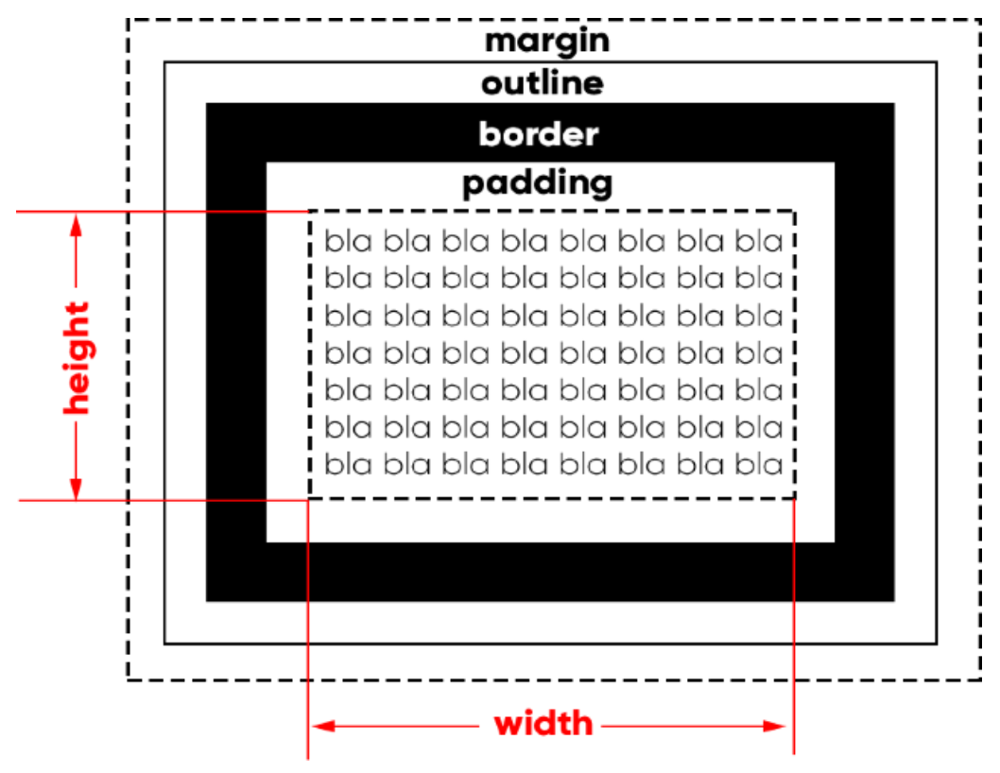

O conteudo dessa explicação se refere a ideia de como é a estrutura de um conteudo quando ele é exibido em tela e o nome caixa se refere justamente a isso, como se todo conteudo desenvolvido estivesse contido dentro de uma "caixa virutal" esta caixa, você pode chamar de elemento e como você sabe Aninhamento é o nome dado ao efeito de um elemento conter ou estar contido dentro de outro, e como nossa ideia é de que os conteudos são desenvolvidos em caixas isso tudo nos leva e entender que a estrutura HTML é composta por "caixas dentro de outras caixas" Mas antes de entendermos como é que essas caixas são compostas vamos aos "Tipos de exibição que tais caixas podem ter"
Caixas que são desenvolvidas nesse "Box Level" geralmente não possuem manipulações especiais, isso porque Box Level é o valor padrão para a exibição da maioria dos elementos um bom exemplo de box level é a propria estrutura dessa explicação, os conteudos textuais que você vê ocupam toda a largura da tua resolução de tela, e note que quando quando o conteudo de um elemento <p> termina, o elemento <p> seguinte é exbido abaixo, mesmo sem ter tido manipulação para isso anteriormente, este é o display box level, exibição box level. Os conteudos de titulo também seguem esse padrão e isso se propaga para a maioria dos elementos HTML Esse efeito é como se estivesse empilhando caixas sem considerar espaços gerados entre o fim do conteudo de uma e outra
Aqui as coisas mudam, diferente do display box level, o display Inline Level "junta" os conteudos, os exibindo um ao lado do outro, aqui o espaço que seria deixado em branco por um display box level é usado para desenvolver o proximo conteudo exemplos disso voçê vê agora, o elemento <strong> possui o display inline level ou seja, ele assim como outros elementos que possuem o display desse tipo, ocupam espaço que seria deixado em branco para que "outra caixa fosse empilhada" entenda o display inline como "exibição conjunta" e box level como "exibição separada"
Agora falando sobre essa tal caixa eu vou usar uma imagem para que ela deixe a explicação melhor
Vamos começar de dentro apra fora. Primeiramente nós temos o local onde o conteudo se encontra (O blabalba) todo conteudo ficará no centro da caixa, possuindo como area as medidas de Height, que é a altura. e de Width, que é a largura essas duas medidas vão definir qual sera o local de ocupação de um conteudo
Padding é o nome dado a uma configuração que damos a Box Model quando queremos que haja um preenchimento interno, que vai empurrar o conteudo para longe da Border e falando em Border, este é o nome dado as bordas da Box model, todo conteudo esta contido entre suas bordas (não esqueça que padding não é configurado por padrão). toda borda possui uma espeçura, uma forma e uma tonalindade. lembresse que esse parametro pode considerar margin de outros elementos caso você queira uma estilização especifica como padding de 1 pixel para um conteudo de footer
Outline é outra configuração que assim como padding não é ativa por padrão e a função do outline é de ser um traçado para fora da borda, e o calculo da sua espessura faz parte da Margin estabelecida.
Margin é a parte final da nossa Box Model, Margin é uma configuração que usamos para gerar espaço entre um elemento e outro. enquanto padding faz um preenchimento interno, Margin faz um preenchimento externo, afastando outros conteudos da Box Model
1° Conteudo fica em uma área demarcada pela height, que é altura e pode ser calculada em pixels ou portentagem e pela width, que é a latura e pode ser calculada em pixels ou porcentagem
2° Padding é um configuração que podemos fazer em pixels ou porcentagem, pode ter direcionamento (para cima, para baixo, para a esquerda ou para a direita. ou para todos os lados) e vai gerar o preenchimento interno, que empurra o conteudo para o centro da box model e o afasta de suas borders
3° Border é uma configuração que gera as bordas do conteudo da Box Model, tendo sua espessura calculada em pixels ou porcentagem, sua forma definina (solid, dashed, double line) e sua tonalidade(cor) declarada
4° Outline é uma configuração inativa que gera um traço visual para fora da border, sua espessura faz parte da Margin
5° Margin é uma configuração que pode ser calculada em pixels ou porcentagem, tem como função separar outros elementos da Box Model, assim como padding a margin pode ser direcionada
NAVEGADOR